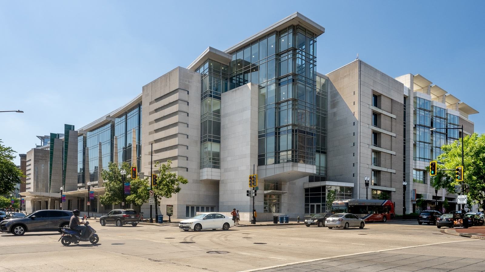
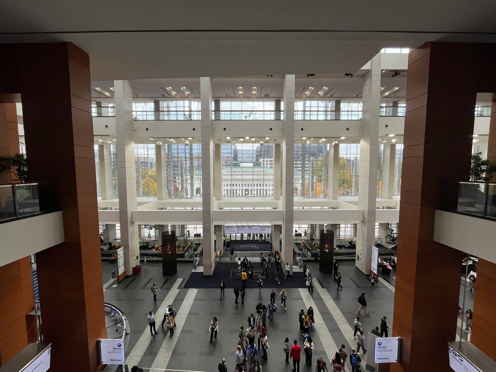

Venue · Convention centre
Walter E. Washington Convention Center
- Type
- Convention centre
- Location
- Washington, United States
- Address
- 801 Allen Y. Lew Place NW, Washington, DC 20001
- Capacity
- 42,000 capacity
- Exhibition space
- 65,311 m²
- Halls
- Official Events DC fact sheet: 2.3 million-square-foot facility with 703,000 square feet of exhibit space and 52,000 square feet of ballroom space, for events of 500 to 42,000 attendees
- Official website
- https://eventsdc.com/venue/walter-e-washington-convention-center
About
Washington, D.C.’s principal convention centre, operated by Events DC. Official facts give 703,000 sq ft of exhibit space (converted to 65,311 m²). Headline capacity_max_delegates is the official upper figure of 42,000 attendees. Events DC lists the current address as 801 Allen Y. Lew Place NW, with a former address of 801 Mount Vernon Place NW. Coordinates are the atlas precise pin.
Spaces
| Name | Type | Capacity | Area |
|---|---|---|---|
| Exhibit space (combined) | — | — | 65,311 m² |
| Ballroom space (combined) | — | — | 4,831 m² |
Upcoming events
Sources
- Official source — https://eventsdc.com/venue/walter-e-washington-convention-center/fact-sheet
- Official source — https://eventsdc.com/venue/walter-e-washington-convention-center